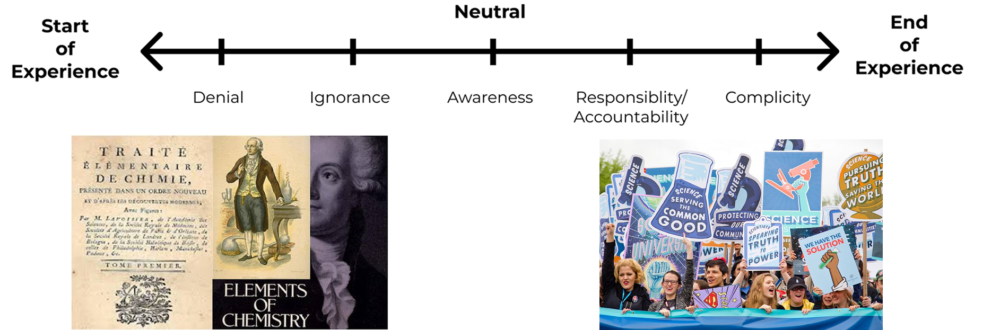
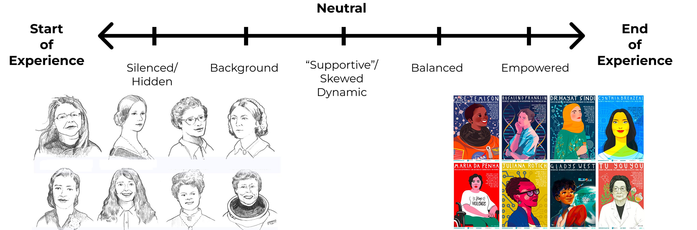

What if you could hear a story... and then suddenly lose it?
When the Voices Fade is a proposed interactive installation about historical erasure and the voices that disappear from the stories we inherit.
Experience Designer & Creative Technologist
Role: Experience Design, Concept Development
Team: Moe Aguilar, Yufei Chen, Joy Lim, Devika Santosh, Benjamin Walker
When the Voices Fade is a proposed interactive installation about historical erasure and the voices that disappear from the stories we inherit.
Constraints and Criteria:
We wanted to focus on how history is always written by the victor, and how we are complicit in whether or not we educate ourselves on what's happening in the world, because today's present is tomorrow's history. We really wanted to focus on erased stories and silenced voices, and how information that is out today may be gone tomorrow.
A physical structure with audio interactive components.
As you walk past it, you hear voices telling their stories. You feel educated, like you're learning something new. And then suddenly, the voices are cut off. Radio silence. You try to move back to where you heard the voices, you try to bring them back, to hear the end of their story, but you can't. It's lost.


Early concept inspiration, and sketch. Notice how one side is higher to represent the information always being louder. The other sides sees a smaller voice, taking a long time to rise; and when it does, it's shut down almost immediately, and again takes a long time to gather up and rise again.
Inputs
User being present physically at the right place.
User modifying the sound waves on their mobile phone app to fix the distorted audio.
⬇️
Outputs
Clear audio that would slowly distort and be lost again.
Resources containing pieces of hidden/untold history.
As we've always been taught to look at stories from the perspective of the audience, the creators, and the characters, we decided to evaluate the values shifts each of these groups will experience by going through our experience.


Age Groups:
Created by Moe Aguilar

Core Ideas
Created by Joy Lim

Initial trials
The team agreed upon using the erasure of women's contributions in history as the underlying theme of the exhibit.
We also decided to incorporate a digital, AR segment to the installation alongside the physical one we had planned.
The following exhibit is modelled for Marie-Anne Lavoisier's work falling under the shadow of Antoine Lavoisier's.


Finalized model showing two interconnected stories


User can adjust the waves physically using interactions on the AR app
(This was just a practice pitch assignment. We had an imaginary 2 millian dollar budget to work with and the ability to choose any site in DC, with reasonable explanation!)
We have highlighted some places related to Women's history, which would be ideal locations where we could pitch this to tours that include them.